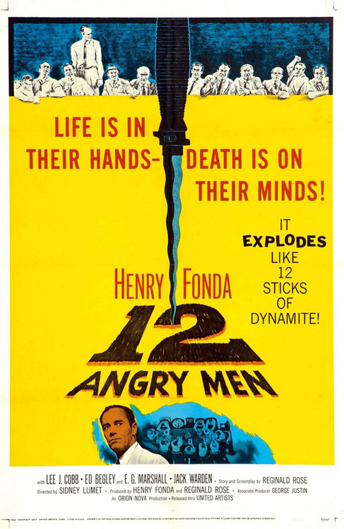

How twelve angry men taught me the power of persuasion
~~~~~~~~~~~~~~~~~~~~~~~~~~~~~~~~~~~~~~~~~
I watched Sidney Lumet’s 12 Angry Men for the first time when I was in my 2nd year into my undergraduate programme. I need a cross discipline subject that will earned me some extra credits but without the boredom of doing it. I opted for Film Production; a two-semester course taught by an aging professor whose name escaped me. Word has it that the professor was part of Alfred Hitchcock’s film crew, so the course can’t be too shabby. And it wasn’t. I mean, what can be better (read: easier) than spending your days at the school theatre and watching movie after movie and calling it ‘studying’. Right? Wrong. It wasn’t a walk in the park.

I had to admit that I was skeptical about the film selections we had to watch, digest, review and discuss. None of them from any director I knew, and nearly all of it was in black & white. Some just had a lot of singing in it. In other word, I was an ignorant brat when it comes to classical films. But all that changed when the professor screened 12 Angry Men, a movie adaption from a play of the same title. I was hooked, lined and sinker.
12 Angry Men is probably one of the finest suspense films I have ever seen. Tightly wound, unforeseeable and densely atmospheric (if not downright claustrophobic), it was a milestone in the history of minimalist filmmaking. Despite the almost non-existent budget of mere $343,000, the film was a flop in its initial release (probably why I never heard of it at that time); it was then nominated for three Academy Awards, including Best Picture, Best Director and Best Writing for adapted screenplay.
At the time, we watched the film from purely cinematographic point of view. No specific message or instructions were particularly given to us on 'how to watch’ it. Still I was at awe on how the director managed to captivate the audience throughout the entire settings simply through dialogues and intense plot cleverly interwoven with conflict of interests amongst its characters. Only a stone-hearted sonofabitch could fail to be moved watching Henry Fonda slowly, methodically sway 11 other jurors, one by one, employing only reason, compassion, and common sense as weapons. Brilliant as this movie might be though had someone told me then that it would become a classic pedagogic reference in prominent business schools for negotiation course, I’d have skeptically raised an eyebrow.
Imagine my surprise when the Berlin School guest lecturer, Professor Seth Freeman, screened the same film during the ’Negotiation and Decision Making’ course…. many moons later. How could this film be relevant to what we need to learn, you ask? Well, in what probably one of the most interesting classes I ever attend at the school, Professor Freeman discussed the critical moments in the movie and what they can teach us about negotiation strategies. The classic film is about 12 jurors deliberating a seemingly open and shut murder case involving an 18-year old kid accused of killing his father. The only juror (Henry Fonda) to vote not guilty makes the question of guilt or innocence not about what he believes but reframes the question to ask “are we sure there’s no more to talk about here?” As they continue to talk, doubts about the defendant’s guilt are raised and the jurors slowly start to change their votes. In the chaos of deliberations, he doesn’t attempt to sway those vehemently opposed to his vote, but rather uses their prejudices and misconceptions to change the votes of the other jurors. His actions are processed focused, showing that he has the capacity to navigate waters and build alliances.
Now I shan’t recount every single moment and spoiled the twist and plot for those who has yet to see the film, but allow me to at least say if there ever was such a technically flawless film, then this is it. One of the main messages of 12 Angry Men is that the judicial system (at least American judicial system that was used then) is a flawed one. It criticizes it with elegant subtlety, while at the same time cleverly exploring the dialogue and motives. Top this with Boris Kaufman’s remarkable cinematography, with its prolonged takes and constant close-ups, makes a particularly astute way of using the black & white medium to strengthen the growth of the plot.
With the exception of some of the earlier scenes and the ending, the whole film is set in a claustrophobic New York jury room during the hottest day of the year. You could argue that the scenographic limitations might potentially harm the film, or make it tedious. Yet, 12 Angry Men is clearly a film that turns its restraints into its superlative assets. There was not a moment in its entire running time where I was not compelled to what was going on, where the constant debates between the men did not interest me; rather, the film gets you hooked from the get go. In such a small room, it’s amazing at how so many things can occur, so many things can be said (or left unsaid) – and how the life of someone depends on them. Fury, jealously, pride, prejudice and frustration all emerge in this film, and it seems as if they’re inevitable. However, the film underlines all this by saying that sometimes oversimplification of the methods is a bad thing; just because there’s some apparent evidence doesn’t mean someone is really guilty. Or as Sherlock Holmes would put it, “things aren’t always what it seems to be."
As the plot and twist in the film unfold, I can see how 12 Angry Men greatly resonate with how we navigate the winding alley of negotiation in real life; and why there’s an art to it. Just like Juror #8, superbly played by Fonda, who carefully listen the flurry of arguments and observe every emotional play from other jurors, the key ingredients to a successful negotiation is about focusing on interest, not positions or demands, then reconcile or satisfy them with creative options.
Interest is all about the reason why people wanted what they say, or think they want. Interest-based negotiation approach (always) reveals hidden opportunities; and at times gives you a glimpse to the motives of the other party that will lend you some insights and be more emphatic to their cause. It is easier for you to convince others to let you serve them with an interest-based approach. Listen and listen carefully, is another key thing. Pay attention to every objections, omissions (what left unsaid); and carefully weight the implication of every choices made. On top of that, doing factual research is always useful, although I’d say that this is important in almost any situation. Level the playing field by learning what makes the other party thick, and this will enable you to make an educated, tentative guess at what your opponent want. At certain point, try to reveal something to certain extent. Don’t play all your cards in one go but always willing to share something, usually about your own needs, to show that you’re willing to meet them halfway. And always invite discussion of options after you’ve discussed interests.
Although in the case of 12 Angry Men, juror #8 is the only person who stands firm to his ground and does not change his opinion. We can always argue whether his point of view is the righteous one, or the probability that the kid might actually be guilty; but if you set that aside for a moment and ask yourself… if the odds are 11 to 1, what would your decision be? Would you go along with the majority’s decision or take the risk and influence the rest?
It is awe-inspiring (and a wee bit odd) that 12 Angry Men remains thoroughly captivating, even though all but three minutes of it was filmed in the same room. This is what cinema is all about – acting. It’s not about the illusion of grandeur propelled by more special F/X or mere pixel pushing. It is the full male, twelve men cast whom, with their fleshed out characters, different psychologies and varying ideas, keep the film afloat.